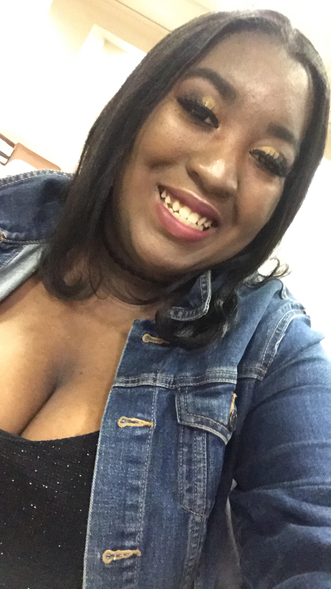

 My name is Ayanna O’Neal and I’m currently attending the University of Arkansas at Little Rock and I am majoring in Web Design and Development. I am very hardworking, dependable, a fast learner, thorough, a team player with a great personality. Experienced in HTML, CSS, Jquery, Adobe Photoshop, and Illustrator. My passion is the designing aspect of my degree and making sure everything is up to par and organized.
Here's my resume in PDF formmate, you are welcome to download it.
August 12, 2020
Mr.Johnson
Hello, my name is Ayanna O’Neal and I am seeking a position for your company. I found your company on my linkedin profile and I noticed you all are interested in hiring web designers. Designing websites making sure the website is appealing to the eye along with creating logos.
I love designing, I have lots of experience in creating layouts of websites such as Figma, I created an entire layout of a website using figma along the color scheme, font, and the different views (tablet, desktop, and mobile view). I work in photoshop fairly often. I am able to create logos using mood boards and making different flyers, banners, and business cards. Working in wordpress makes the designing aspect a lot easier because I don't have to code everything from scratch in css unless I have to along with using Bootstrap. Very knowledgeable in working in HTML5 along with css and javascript, I can design layouts and webpages using these skills. HTML5 is where I learned everything about creating and designing web pages. I am a team player and a hard worker, always willing to learn and try new things, always on time and I make sure projects are perfect and fits what the client wants, I am a good communicator, and willing to help anyone when needed.
Thank you for giving me the opportunity to talk with you and being able to have an inside view on the company and how everything operates. Along with how everyone has their own job description and everyone comes together as a team working together on building web pages for clients. I hope to hear from you soon.
Sincerely yours,
Ayanna O’Neal
You can contact me via email, phone, or mail
phone: (501) 416-2899
Email: aroneal@ualr.edu Us
Address: 9810 Capella Drive, Little Rock, AR 72209